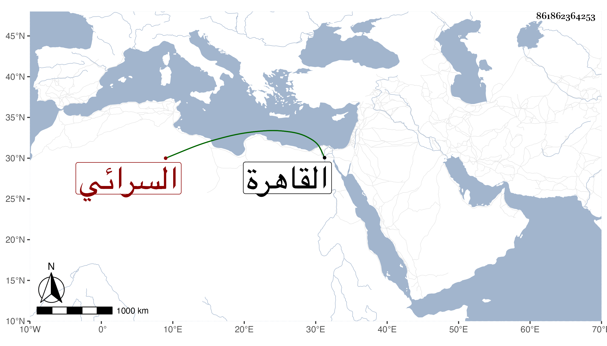

0902Sakhawi.DawLamic.ITO20230111-ara1.EIS1600.861862364253
Biography ID: 861862364253
إبراهيم بن سليمان بن عبد الرحمن البرهان أبو سعيد السرائي هكذا قرأته بخط شيخه الزين العراقي بل هو بخط نفسه وأما شيخنا فانقلب عليه وذلك أنه قال إبراهيم بن عبد الرحمن بن سليمان البرهان السرائي الشافعي نزيل القاهرة ويعرف بابراهيم شيخ والصواب ما قدمته قدم القاهرة واعتنى بالحديث عناية تامة ولازم فيه الزين العراقي ومن جملة ما قرأ عليه علوم الحديث لابن الصلاح ووصفه كما بخطه عليه بالشيخ الامام الفاضل الناسك وعلى النسائي بدون الناسك وحصل النسخ المليحة وقام بضبطها وتحسينها مع معرفة تامة بالفقه وكونه ممن يحفظ الحاوي الصغير ويديم درسه وكتابة المنسوب ونظم الشعر ومنه مما كتبه عنه شيخنا :
| ولد الإمام الشافعي الرافعي | خمسا وخمسمئ فعي |
| شالت نعامته ثلاثا بعد عشرين وستمئ أسائل فاسمع |
واتقانه لعدة صنائع بيده وقد ولي مشيخة الرباط بالبيبرسية وكان خيرا دينا صينا . مات في يوم الاثنين رابع عشري ربيع الأول وقال شيخنا في ليلة الجمعة حادي عشريه سنة اثنتين وثمان مائة ومن لطائفه قوله كان أول خروج تمرلنك في سنة عذاب يشير إلى أن أول ظهوره سنة ثلاث وسبعين وسبعمائة لأن العين بسبعين والذال المعجمة بسبعمائة والألف والباء بثلاثة وقد ذكره شيخنا في ثاني قسمي معجمه وفي أنبائه وقال سمعت من فوائده ومن نظمه وأفاد أن ولده ضيع كتبه من بعده والمقريزي وابن خطيب الناصرية وحرف العيني نسبته بالشيرازي .
